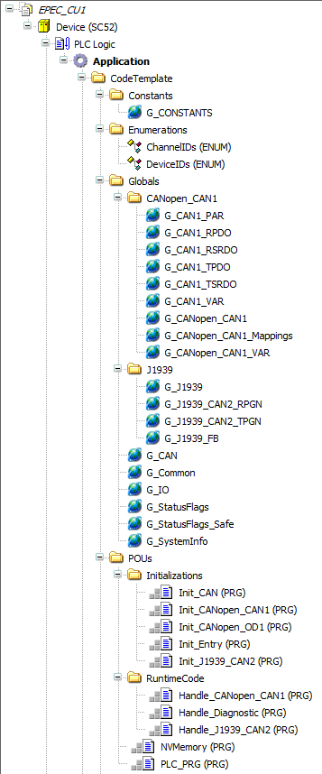
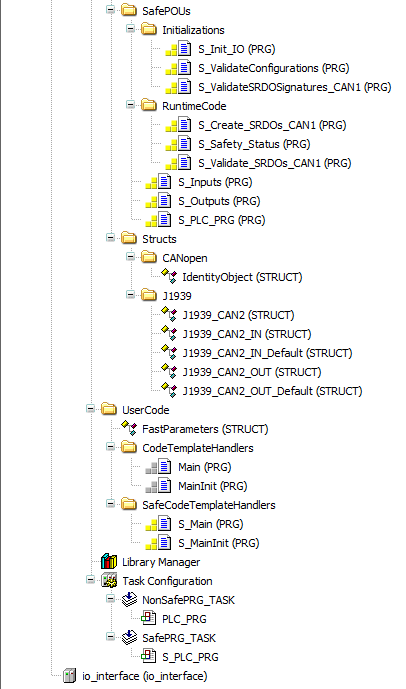

MultiTool Creator automatically creates a code template for a CODESYS project when Create CODESYS Project is selected. The code template contains all variable definitions and initialization needed for programming the device.
This topic briefly introduces the code template parts:
MultiTool Creator automatically generates several POUs for the CODESYS project and they will always be overwritten when changes done in MultiTool Creator are imported to the CODESYS project. For this reason, the user application code should never be added to the generated POUs.
S series code template includes two tasks: one for safety application and one for non-safety.
The entry point of the user safety application will be a POU called S_Main. The code template automatically calls the S_Main program from the S_PLC_PRG after initialization is done. It is not overwritten by MultiTool. If the S_Main POU is missing from the application, the CODESYS build command gives and error. The code template in CODESYS 3.5 projects includes a S_Main POU that is made with ST language. To make the S_Main POU with another programming language, delete the S_Main POU and make a new one.
The entry point of the user non-safety application will be a POU called Main. The code template automatically calls the Main program from the PLC_PRG after initialization is done. Otherwise, the same rules apply than above for S_Main.
For more information on safety project programming, see Epec Programming and Libraries Manual.
The CODESYS 3.5 Device tree for S series in the following image includes all project objects on the same view:


The following table lists the POUs of the code template.
|
POU |
Description |
|
Init_CAN |
CAN bus initializations (low level) |
|
Init_CANopen_CANx |
CANopen initializations (protocol initialization) |
|
Init_CANopen_ODx |
CANopen OD initialization, add indices to OD |
|
Init_Entry |
Read system information and initialize random number generator (for authentication request code) |
|
Init_Events |
Event system initialization |
|
Init_J1939_CANx |
J1939 protocol initializations |
|
Handle_CANopen_CANx |
Update CANopen protocols |
|
Handle_Diagnostic |
Run diagnostics, update SystemOk flag |
|
Handle_Firmware_Errors |
Read firmware error log and add errors to application log |
|
Handle_J1939_CANx |
Update J1939 protocol |
|
Inputs |
Read, filter and scale inputs. User should use input values from the outputs of this block |
|
NVMemory |
Handle OD parameter and User values reading and writing to/from non-volatile memory |
|
Outputs |
Write outputs. To control the outputs of the unit, user should write to the inputs of this block |
|
PLC_PRG |
Non-safe program entry point. Handles initializations and run time updates. Calls the user application “Main” |
|
S_CopyValidatedParameters |
Copy validated safety parameters from OD to safety variables |
|
S_Init_IO |
Initialize the I/O of the unit. Both the non-safety and safety I/O are initialized here. |
|
S_ValidateConfigurations |
Check that parameters are correct and SRDO signatures are correct. If they are not, safe operation of the application is not allowed |
|
S_ValidateParameters_CANx |
Check that safety parameter CRCs match with the ones saved to the non-volatile memory |
|
S_ValidateSRDOSignatures_CANx |
Check that SRDO signatures match the ones set by MultiTool |
|
S_Create_SRDOs_CANx |
Create SRDO variables from Safety variables. Four non-safety variables are created from each safety variable: Plain variable, Inverted variable and timestamps for both. The plain and inverted variables are then sent to the CAN bus with SRDO messages |
|
S_Safety_Status |
Check the conditions for enabling safe operation |
|
S_ValidateAccessCode_CANx |
Before adjusting safe variables, check that user has given a valid access code |
|
S_Validate_SRDOs_CANx |
Check that plain and inverted values received from SRDO messages match, and time limits of receiving SRDOs have not been exceeded |
|
S_Inputs |
Read, filter and scale safety related inputs. User should use input values from the outputs of this block |
|
S_Outputs |
Write safety related outputs. To control the safety related outputs of the unit, user should write to the inputs of this block |
|
S_PLC_PRG |
Safety related program entry point. Handles initializations and run time updates. Calls the safety related user application “S_Main” |
* CAN bus consecutive numbering, typically 1=CAN1, 2=CAN2 etc.
MultiTool Creator generates global variable and function block instance definitions to (Implicit) Globals lists. These variables and instances can be used, for example, for diagnosing CAN bus and hardware. Code template calls these function blocks automatically. Code template global definitions can be found from the Device tree in CODESYS 3.5 (CodeTemplate > Globals)
Variable definitions are divided into several global lists, defined in the table below.
|
Object |
Description |
|
G_CANx_PAR |
OD variables stored in non-volatile memory, so called application parameters |
|
G_CANx_RPDO |
Variables received in PDO messages |
|
G_CANx_RSRDO |
Variables received in RSRDO messages |
|
G_CANx_SPAR |
Validated safety parameter values |
|
G_CANx_TPDO |
Variables transmitted in PDO messages |
|
G_CANx_TSRDO |
Variables transmitted in TSRDO messages |
|
G_CANx_VAR |
- parameter stored in volatile memory (RAM parameter) and defined in OD - all the other OD variables that do not belong to any of the other G_CANx groups mentioned above |
|
G_CANopen_CANx |
CANopen related function blocks that the code template uses |
|
G_CANopen_CANx_Mappings |
PDO and SRDO mappings |
|
G_CANopen_CANx_slave_Configurations |
A global variable list for each slave device |
|
G_CANopen_CANx_VAR |
CANopen related variables that the code template uses |
|
G_CAN |
CAN channel definitions |
|
G_Common |
Contains variables common for all CANs, e.g. parameter system handlers and images which are used by code template. |
|
G_Events_CANx |
Application specific events |
|
G_J1939 |
Application J1939 data |
|
G_J1939_CANx_RPGN |
Receive PGN & SPN variables |
|
G_J1939_CANx_TPGN |
Transmit PGN & SPN variables |
|
G_J1939_FB |
J1939 function block instances for code template |
|
G_Logs |
Application code template log using SafeErrorLog library |
|
G_StatusFlags |
Code template flags |
|
G_StatusFlags_Safe |
Safety related code template flags |
|
G_SystemInfo |
Information about the project and the unit |
* OD's consecutive numbering, typically 1=CAN1, 2=CAN2 etc.
MultiTool Creator creates structures and/or enumerations for
J1939 receive and transmit PGNs
Pre-defined indexes
User defined record indexes
Events
In CODESYS 3.5, Data unit types (DUT) can be found from the Device tree. Enumerations are placed into the Enums and structures into the Structs folder.
Epec Oy reserves all rights for improvements without prior notice.
Source file topic200200.htm
Last updated 25-Jun-2025